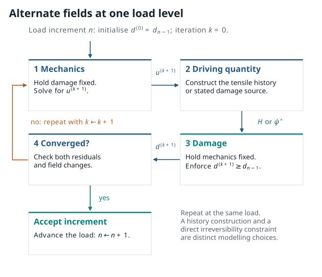

4. From solid mechanics to staggered damage updates¶
{kind=link}

Figure 4.1 A staggered solve does not make the mechanics and damage independent; it chooses an order in which to update their coupled fields.¶
4.1. The mechanical subproblem¶
For a quasistatic small-strain body, balance of linear momentum is
with displacement or traction boundary conditions on complementary portions of the boundary. The strain is
In a phase-field model the stress depends on damage through the selected energy split. A representative relation is
Holding \(d\) fixed makes the mechanical problem easier to state, but it does not make it a generic linear solve: material laws, finite strain, contact, and boundary conditions may all add nonlinearity.
The weak form asks for a displacement \(u\) such that, for all admissible test fields \(v\),
This is the bridge from a continuum equation to finite elements. Shape functions turn \(u\) and \(v\) into finite vectors of degrees of freedom; an assembly or matrix-free operation then evaluates the residual.
4.2. Why the damage equation resembles diffusion¶
From the fracture-energy chapter, the unconstrained damage residual contains
The Laplacian has the same mathematical form as a diffusion operator. Compare the steady heat equation
with a schematic fixed-mechanics damage equation
Both equations spread a field through a gradient penalty or conductivity-like term. The analogy helps explain why boundary conditions and element gradients matter. It is not a physical equivalence:
the right-hand side is coupled to displacement and a selected tensile energy;
\(d\) is constrained by a one-way damage history rather than freely diffusing; and
the coefficients and source can change during nonlinear iteration.
Treating damage as an ordinary heat field can therefore hide the very constraint that represents irreversible fracture.
4.3. One load increment, two coupled updates¶
At load increment \(n\), start with the previously accepted damage \(d_{n-1}\). A simple staggered pattern is:
initialise \(d_n^{(0)}=d_{n-1}\);
solve the mechanics problem for \(u_n^{(k+1)}\) with \(d_n^{(k)}\) fixed;
construct the specified damage-driving quantity from \(u_n^{(k+1)}\);
solve the constrained damage problem for \(d_n^{(k+1)}\);
test convergence of both fields and the relevant residuals; and
either repeat at this load level or accept the increment.
The figure above is a visual version of this algorithm. A history-field implementation may use, for example,
to prevent loss of the tensile driving force on unloading. That is one commonly used construction, not the definition of all phase-field models. Other approaches impose \(d_n\geq d_{n-1}\) directly in the damage solve.
4.4. Staggered, monolithic, Newton, and quasi-Newton¶
These terms answer different algorithmic questions.
Staggered solve. Update \(u\) and \(d\) in blocks. It can be easier to implement and diagnose because each subproblem has a recognisable role. It may need several block iterations per load step and can be sensitive to coupling strength and stopping criteria.
Monolithic solve. Solve for the coupled state \((u,d)\) together. This can better represent strong coupling, but requires a larger coupled residual, Jacobians or Jacobian actions, and careful treatment of inequality constraints.
Newton method. Linearise a residual around the current state using its Jacobian. Quadratic local convergence is a useful ideal, not an unconditional observed property of a fracture calculation.
Quasi-Newton method. Update an approximate Jacobian or inverse Jacobian from changes in residuals and states. BFGS is a well-known example for optimisation. Quasi-Newton therefore names a nonlinear solve strategy; it is neither a fracture energy nor an XFEM enrichment.
No single label supplies a convergence proof. Record the block iteration count, tolerance, residual definition, and accepted load increments.
4.5. Static and dynamic fracture¶
The quasistatic balance above neglects inertia. A dynamic model instead uses
Now time integration, mass treatment, wave propagation, damping choices, and time-step size affect the numerical result. A dynamic calculation may show a different crack path or timing from a quasistatic calculation even with the same stored energy, because the kinetic-energy and loading-rate terms differ.
The phrase “dynamic phase field” should therefore be accompanied by the time integrator, time step, inertia/damping assumptions, and the quantity used to enforce or approximate irreversibility.
4.6. Acceptance checks¶
At an accepted increment, consider at least the following checks:
mechanical balance: a stated residual norm, reaction balance, or weak form defect;
damage update: a stated residual or constrained-solver criterion;
irreversibility: verify \(d_n\geq d_{n-1}\) within the documented numerical tolerance;
bounds: inspect whether \(d\) respects the intended interval;
energy interpretation: report the terms and sign convention before claiming energy balance; and
field inspection: view \(u\), \(d\), and the driving quantity, not only a scalar convergence history.
An iteration count without the residual definition is weak evidence. A decreasing residual without field inspection can still conceal a wrong boundary condition, a flipped damage convention, or an under-resolved band.
4.7. Predict before the public calculation¶
The integrated PhAST lesson in the next chapter uses a quasistatic staggered route. Before reading its code or retained plots, predict which two traces should change as the load is increased: one trace should describe the evolving damage outside the locked precrack, and another should record how many coupled updates were needed at each load level. Neither trace alone is a residual norm or proof of mesh convergence; use the case card and field plots as well.
4.8. Exercise: write the update before reading the code¶
Suppose a notched specimen is loaded in displacement control. Put the following actions in a sensible order and identify the action that enforces one-way damage:
solve for displacement;
accept the new load step;
update the damage-driving quantity;
check field/residual changes;
solve for damage;
initialise from the previous accepted damage.
Solution
Start by initialising from the previous accepted damage. Solve displacement at the current trial damage, update the stated driving quantity, and solve the damage subproblem subject to its irreversibility rule. Then check residuals and field changes; only after the checks pass should the load step be accepted. The lower-bound constraint \(d_n\geq d_{n-1}\), or a history construction designed to enforce its effect, is the one-way component.
This ordering is the interpretation key for the later computational lesson. The lesson’s stagger-iteration trace describes the configured block-update route; it should not be mistaken for a universal convergence guarantee.
4.9. Sources for this chapter¶
For a variational phase-field treatment and a staggered implementation route, see Miehe, Welschinger, and Hofacker (2010). A discussion of numerical formulations and length-scale effects is provided by Gerasimov and De Lorenzis (2019).